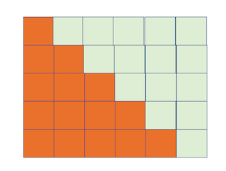

Problem Set I¶
In [1]:
%%HTML
<iframe width="560" height="315" src="https://www.youtube.com/embed/HktA7HH5NBc" frameborder="0" allow="autoplay; encrypted-media" allowfullscreen></iframe>
Mathematical Goals:
- Solve problems related to areas
- Understand Base number notation
- Perform basic operations on numbers including root extraction
- Use Pythagorean Theorem to find distances
- Solve quadratic equations
- Investigate partial sums of series
The problems below come from the marvelous text The Historical Development of Calculus by C.H. Edwards. You are to submit solutions with your partners, and discuss the problems openly on our Piazza board. The suggested readings may help you with the problems.
Guidelines for writing Solutions¶
We will focus on four areas to determine the quality of solutions. First and most important is that you are writing your solutions to a reader, and you should be considerate of using devices that help the reader understand your solutions. The four components follow:
- Clearly State the Problem in your own words. You should be able to clearly and concisely explain the problem in your own everyday language. Aim for simplicity and clarity; as if you were explaining the situation to a random person on the sidewalk.
- Describe the approach to the solution. Again, briefly and cogently describe how you solve the problem in everyday language. Use technical vocabulary only when necessary, and again your aim is clarity and concision.
- Show solution method using multiple representations: words, tables, graphs/pictures, formulas, numbers. These are devices to help you solve problems and to help you communicate your solutions to others. Visualizations are powerful tools, use them regularly.
- Summarize and discuss: Look Back. Clearly state your solution. Is this the only possibility? What could have been done differently or better to solve the given problem.
Suggested Reading:
- Chapter 1: The Historical Development of Calculus, C.H.Edwards
- Chapter 1: The Origins of Calculus, David Perkins
- History and Origins of the Calculus, G.W. Leibniz
Problem I¶
Use the images above to explain the formulas for the areas:
- of triangles \(A = \frac{1}{2}bh\)
- of parallelograms \(A = bh\)
- of trapezoids \(A = \frac{1}{2}(b_1 + b_2)h\)
Problem II¶
- In one of the Rhind papyrus problems the area of a cirle is calculated by squaring 8/9 of its diameter. Compare this method with the area formula \(A = \pi r^2\) to obtain the Egyptian approximation of \(\pi = 3.16\).
- This approximation to \(\pi\) may have been found by trisecting each side of a square circumscribed about a circle of diameter \(d\), and cut off its 4 corners. Show that the area here would be:
Problem III¶
Four copies of a right triangle with legs \(a\) and \(b\) and hypotenuse \(c\) together with a square of edge \(c\), are assembled as in Figure 3 to form a square of edge \(a + b\). Explain why the assembled figure is a squre, and derive the Pythagorean relation by computing its area in two different ways.
Problem IV¶
The Babylonians generally used \(3r^2\) for the area of a circle of radius \(r\), corresponding to the poor approximation \(\pi \approx 3\). Show that this approxiamation could have been obtained by averaging the areas of the iscribed and circumscribed squares shown below.
Problem V¶
Archimedes took a similar approach to approximating \(\pi\). He began by inscribing and circumscribing a circle with regular hexagons, and successively doubled the sides in order to, calculuating their perimeters to find upper and lower bounds for \(\pi\). Beginning with a circle of radius 1 and compute the perimeter for the following shapes:
| Polygon | Area |
|---|---|
| Inscribed 6 sided | |
| Circumscribed 6 sided | |
| In 12 Sided | |
| Circum 12 Sided |
Problem VI¶
The Babylonians approached square root approximation in a similar iterative methodology like Archimedes use of the method of exhaustion. To start, suppose we have a guess that we think is close to \(\sqrt{2}\)
Either \(x_1\) is a better guess or \(\frac{2}{x}\), but even better still would be the average of the two:
If we continue in this manner we will get better and better approximations:
Follow the Babylonians method to approximate \(\sqrt{2}\) through \(x_5\). Repeat for \(\sqrt{3}\).
Problem VII¶
The Arabic mathematician Al - Khowarizmi’s introduced the base 10 numeration system to popular audiences in his writing. Here, collections of groups of 10 items were combined with positional notation and zero to make our familiar numeration system. For example, we would write 13,285 as
Consider groupings different than base 10 for the following questions:
How many numerals are required for a base 5 numeration system?
Can you express the base 10 numbers 360, 78, 35, and 23 in base 5 notation? (Ex 10 base 10 = \(20_5\)(base 5))
0.3012 stands for
\[3/10 + 0/10^2 + 1/10^3 + 2/10^4\]. Write the same number as a decimal in base 5.
Problem VIII¶
Al - Khowarizimi also discussed an approach to solving quadratic equations such as \(x^2 + 10x = 39\). According to Edwards, his solution was
- Take half the number of roots, that is, five, and multply this by itself to obtain twenty-five.
- Add this to the thiry-nine, giving sixty-four.
- Take the square root, or eight, and subtract from it half the number of roots (five).
- The result, 3, is the required root.
Solve the equation \(x^2 + 8x = 65\) following a similar construction to that above.
Problem IX¶
The images below help to understand the value of expressions like:
- Find the sum when \(n = 5\)
- Find the sum when \(n = 10\)
- Is there a way to use the image below to understand the sum when \(n = 100\)? 
Problem X¶
In the seventeenth century, Leibniz introduced modern summation notation. The previous problems sum would be written as
which indicated we are adding (\(\sum\)), starting with an index of 1 (\(i = 1\)), and the things we are adding are simply the indices (\(i\)). Sometimes, we recognize patterns in the partial sums of terms as a way to understand the general approach. Consider the summation
Fill in the table with the following partial sums. Do you see a pattern? Describe it.
| \(n\) | Partial Sum \(\sum_{i = 1}^n i^3\) |
|---|---|
| 1 | |
| 2 | |
| 3 | |
| 4 | |
| 10 | |
| j |